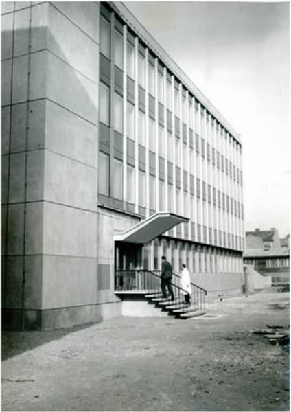
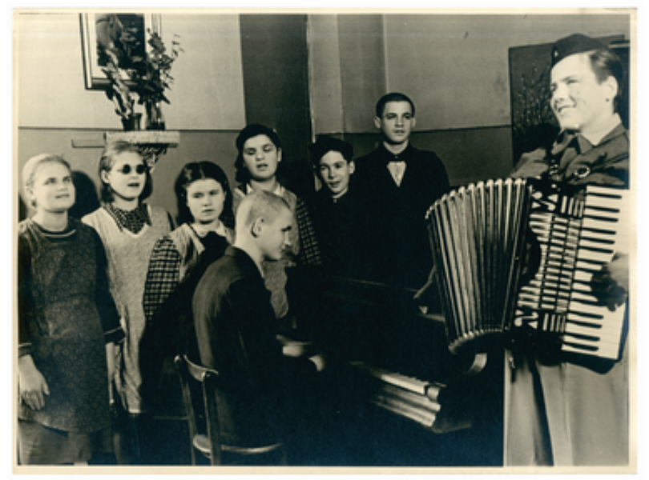
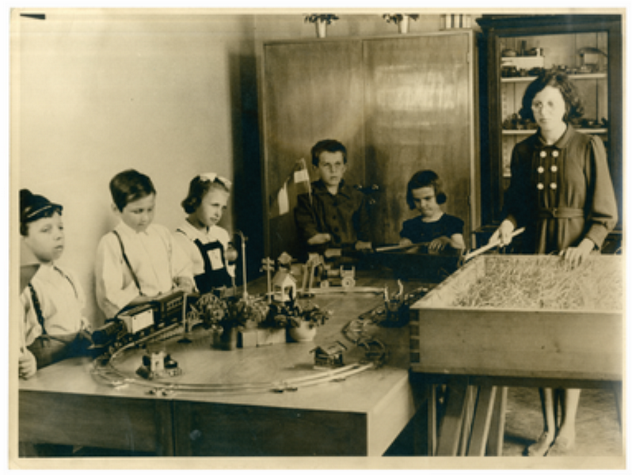
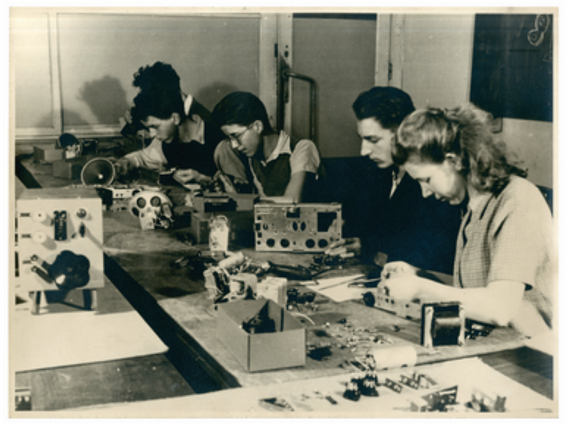
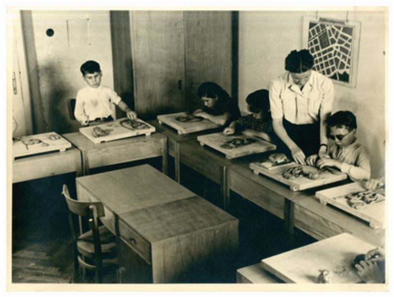
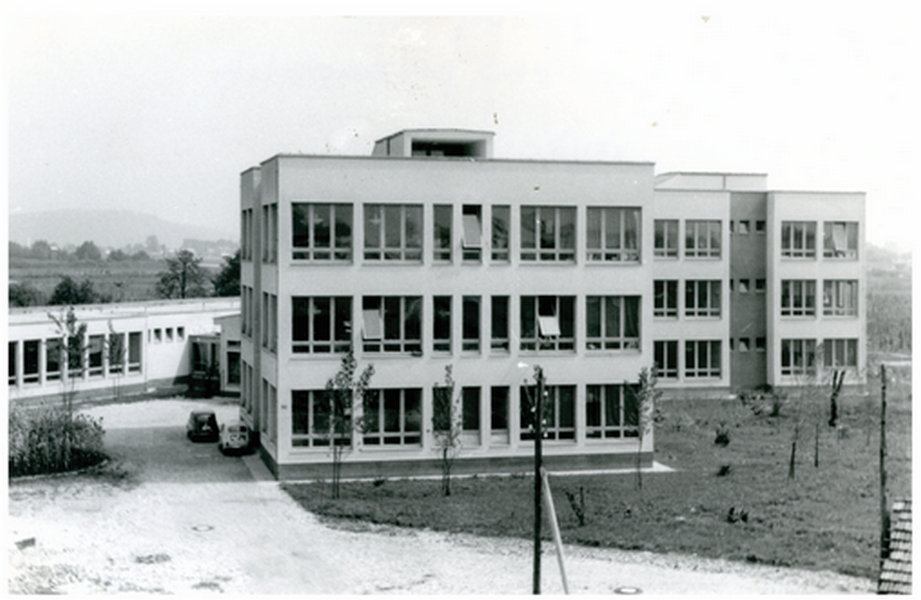
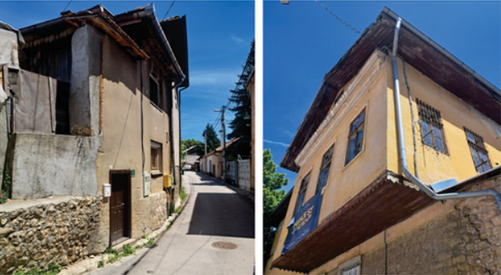
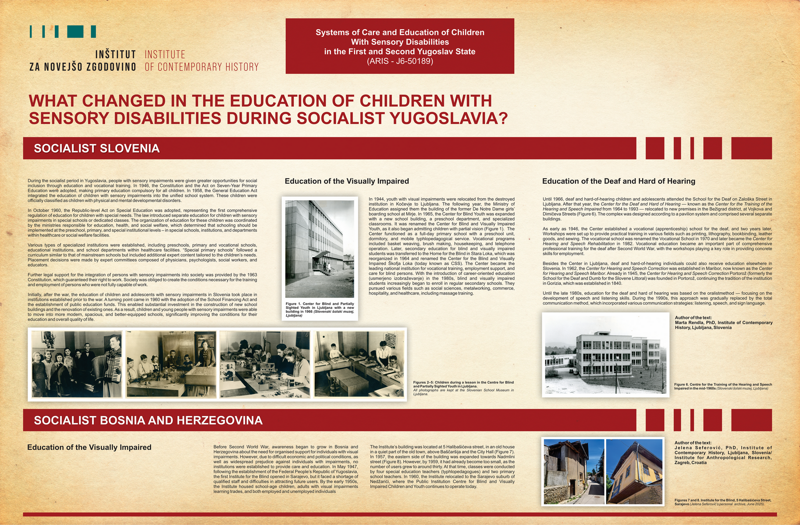

Dr. Marta Rendla
Dr. Jelena Seferović
During the socialist period in Yugoslavia, people with sensory impairments were given greater opportunities for social inclusion through education and vocational training. In 1946, the Constitution and the Act on Seven-Year Primary Education were adopted, making primary education compulsory for all children. In 1958, the General Education Act integrated the education of children with sensory impairments into the unified school system. These children were officially classified as children with physical and mental developmental disorders.
In October 1960, the Republic-level Act on Special Education was adopted, representing the first comprehensive regulation of education for children with special needs. The law introduced separate education for children with sensory impairments in special schools or dedicated classes. The organization of education for these children was coordinated by the ministries responsible for education, health, and social welfare, which determined that schooling should be implemented at the preschool, primary, and special institutional levels-in special schools, institutions, and departments within healthcare or social welfare facilities.
Various types of specialized institutions were established, including preschools, primary and vocational schools, educational institutions, and school departments within healthcare facilities. “Special primary schools” followed a curriculum similar to that of mainstream schools but included additional expert content tailored to the children’s needs. Placement decisions were made by expert committees composed of physicians, psychologists, social workers, and educators.
Further legal support for the integration of persons with sensory impairments into society was provided by the 1963 Constitution, which guaranteed their right to work. Society was obliged to create the conditions necessary for the training and employment of persons who were not fully capable of work.
Initially, after the war, the education of children and adolescents with sensory impairments in Slovenia took place in institutions established prior to the war. A turning point came in 1960 with the adoption of the School Financing Act and the establishment of public education funds. This enabled substantial investment in the construction of new school buildings and the renovation of existing ones. As a result, children and young people with sensory impairments were able to move into more modern, spacious, and better-equipped schools, significantly improving the conditions for their education and overall quality of life.
Education of the Visually Impaired

In 1944, youth with visual impairments were relocated from the destroyed institution in Kočevje to Ljubljana. The following year, the Ministry of Education assigned them the building of the former De Notre Dame girls’ boarding school at Mirje. In 1965, the Center for Blind Youth was expanded with a new school building, a preschool department, and specialized classrooms. It was renamed the Center for Blind and Visually Impaired Youth, as it also began admitting children with partial vision (Figure 1). The Center functioned as a full-day primary school with a preschool unit, dormitory, and mobile typhlopedagogical service. Vocational programs included basket weaving, brush making, housekeeping, and telephone operation. Later, secondary education for blind and visually impaired students was transferred to the Home for the Blind in Stara Loka, which was reorganized in 1964 and renamed the Center for the Blind and Visually Impaired Škofja Loka (today known as CSS). The Center became the leading national institution for vocational training, employment support, and care for blind persons. With the introduction of career-oriented education (usmerjeno izobraževanje) in the 1980s, blind and visually impaired students increasingly began to enroll in regular secondary schools. They pursued various fields such as social sciences, metalworking, commerce, hospitality, and healthcare, including massage training.




Education of the Deaf and Hard of Hearing
Until 1966, deaf and hard-of-hearing children and adolescents attended the School for the Deaf on Zaloška Street in Ljubljana. After that year, the Center for the Deaf and Hard of Hearing — known as the Center for the Training of the Hearing and Speech Impaired from 1964 to 1993 — relocated to new premises in the Bežigrad district, at Vojkova and Dimičeva Streets (Figure 6). The complex was designed according to a pavilion system and comprised several separate buildings.
As early as 1946, the Center established a vocational (apprenticeship) school for the deaf, and two years later, Workshops were set up to provide practical training in various fields such as printing, lithography, bookbinding, leather goods, and sewing. The vocational school was renamed the Vocational School in 1970 and later became the Center for Hearing and Speech Rehabilitation in 1982. Vocational education became an important part of comprehensive professional training for the deaf after Second World War, with the workshops playing a key role in providing concrete skills for employment.
Besides the Center in Ljubljana, deaf and hard-of-hearing individuals could also receive education elsewhere in Slovenia. In 1962, the Center for Hearing and Speech Correction was established in Maribor, now known as the Center for Hearing and Speech Maribor. Already in 1945, the Center for Hearing and Speech Correction Portorož (formerly the School for the Deaf and Dumb for the Slovene Littoral) was founded in Portorož, continuing the tradition of the institution in Gorizia, which was established in 1840.
Until the late 1980s, education for the deaf and hard of hearing was based on the oralist method — focusing on the development of speech and listening skills. During the 1990s, this approach was gradually replaced by the total communication method, which incorporated various communication strategies: listening, speech, and sign language.

Education of the Visually Impaired
Before Second World War, awareness began to grow in Bosnia and Herzegovina about the need for organised support for individuals with visual impairments. However, due to difficult economic and political conditions, as well as widespread prejudice against individuals with impairments, no institutions were established to provide care and education. In May 1947, following the establishment of the Federal People’s Republic of Yugoslavia, the first Institute for the Blind opened in Sarajevo, but it faced a shortage of qualified staff and difficulties in attracting future users. By the early 1950s, the Institute housed school-age children, adults with visual impairments learning trades, and both employed and unemployed individuals
The Institute’s building was located at 5 Halibašičeva street, in an old house in a quiet part of the old town, above Baščaršija and the City Hall (Figure 7). In 1957, the eastern side of the building was expanded towards Nadmlini street (Figure 8). However, by 1959, it had already become too small, as the number of users grew to around thirty. At that time, classes were conducted by four special education teachers (typhlopedagogues) and two primary school teachers. In 1960, the Institute relocated to the Sarajevo suburb of Nedžariči, where the Public Institution Centre for Blind and Visually Impaired Children and Youth continues to operate today.

